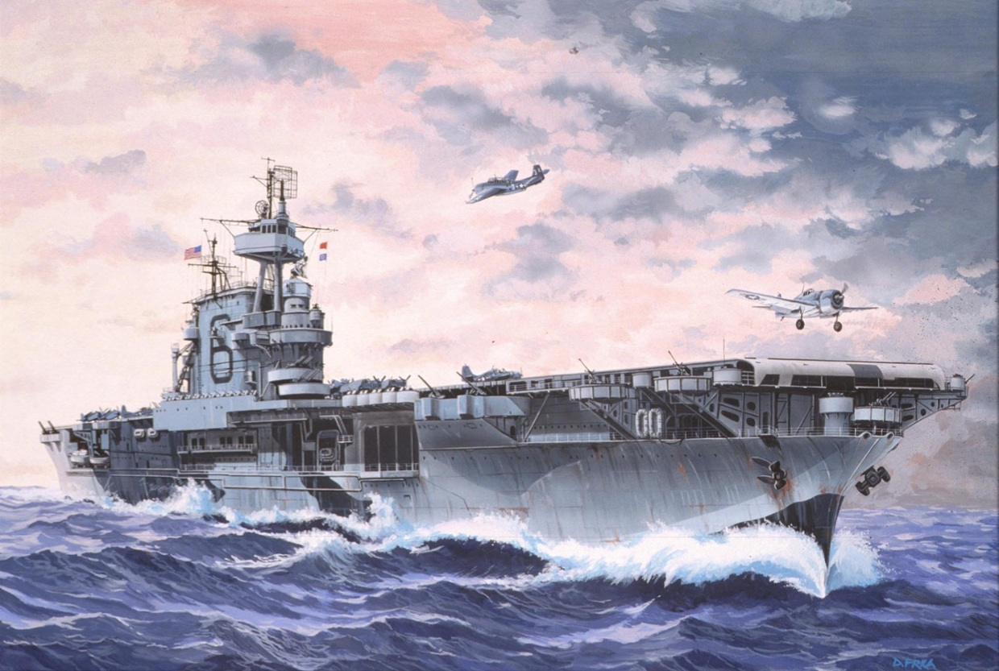

"A good Navy is not a provocation to war. It is the surest guaranty of peace."
-Theodore Roosevelt

The Grey Ghost.
The Most Decorated Ship of the Second World War.
Octuber 1936 - Launched at Newport News Shipbuilding, She was the second carrier of the
Yorktown-class and the sixth built for the United States Navy.
January 1942 - Enterprise's Task Force 8 raided Kwajalein, Wotje,
and Maloelap in the Marshall Islands, sinking three Japanese ships,
damaging eight, and destroying numerous airplanes and ground facilities.
Enterprise received only minor damage in the Japanese counterattack,
as TF 8 retired to Pearl Harbor.
Enterprise, now part of Task Force 16, swept the central Pacific,
attacking enemy installations on Wake and Marcus Islands.
April 1942 - After minor alterations and repairs at Pearl Harbor,
Enterprise and TF 16 departed on 8 April 1942 to rendezvous with her
sister ship Hornet and sailed west, escorting Hornet on the mission
to launch 16 Army B-25 Mitchells in the "Doolittle Raid" on Tokyo.
While fighters from Enterprise flew combat air patrol, the B-25s launched
on 18 April, and flew undetected the remaining 600 miles (1,000 km) to the target.
The task force, its presence known to the enemy after a Japanese picket boat radioed
a warning, reversed course and returned to Pearl Harbor on 25 April.
June 1942 - The Battle of Midway began on the morning of 4 June 1942,
when four Japanese carriers, unaware of the presence of U.S. naval forces,
launched attacks on Midway Island. Shortly after the first bomb fell on Midway,
the first wave of planes (4 B-26B Marauders, 6 TBF-1 Avengers,11 SB2U-3s, 16 SBDs and 15 B-17s)
from Midway Island attacked unsuccessfully. Several more groups attacked, again failing to
damage their targets. Planes from the U.S. carriers attacked next. Enterprise torpedo bombers
attacked first, scoring no hits and suffering heavy losses. Soon after, Enterprise dive bombers
attacked and disabled the Japanese carriers Kaga and Akagi, leaving them ablaze,
while Yorktown aircraft also bombed the Japanese aircraft carrier Sōryū, leaving her burning and dead in the water.
Within an hour, the remaining Japanese carrier, Hiryu, launched air strikes that crippled
Yorktown with three bombs and two torpedoes striking home during two separate attacks.
In late afternoon, a mixed squadron of Enterprise and Yorktown bombers, flying from Enterprise,
disabled Hiryu, leaving her burning. The following day Enterprise dive bombers alone sank cruiser
Mikuma. While Yorktown and Hammann were the only American ships sunk, TF 16 and TF 17 lost a
total of 113 planes, 61 of them in combat. Japanese losses were much higher:
four carriers (all scuttled), one cruiser and 272 carrier aircraft with many of their
highly experienced aircrews. Despite losses to her aircraft squadrons,
Enterprise came through undamaged and returned to Pearl Harbor on 13 June 1942.
July 1942 - Enterprise sailed for the South Pacific, where she joined
TF 61 to support the amphibious landings in the Solomon Islands on 8 August.
For the next two weeks, the carrier and her planes guarded seaborne communication
lines southwest of the Solomons. On 24 August, a strong Japanese force was discovered
some 200 miles (300 km) north of Guadalcanal, and TF 61 sent planes to the attack.
In the ensuing Battle of the Eastern Solomons, the light carrier Ryūjō was sunk,
and the Japanese troops intended for Guadalcanal were forced back. Enterprise suffered
most heavily of the American ships; three direct bomb hits and four near misses killed
74, wounded 95, and inflicted serious damage on the carrier. Quick, hard work by damage
control parties patched her up so that she was able to return to Hawaii under her own power.